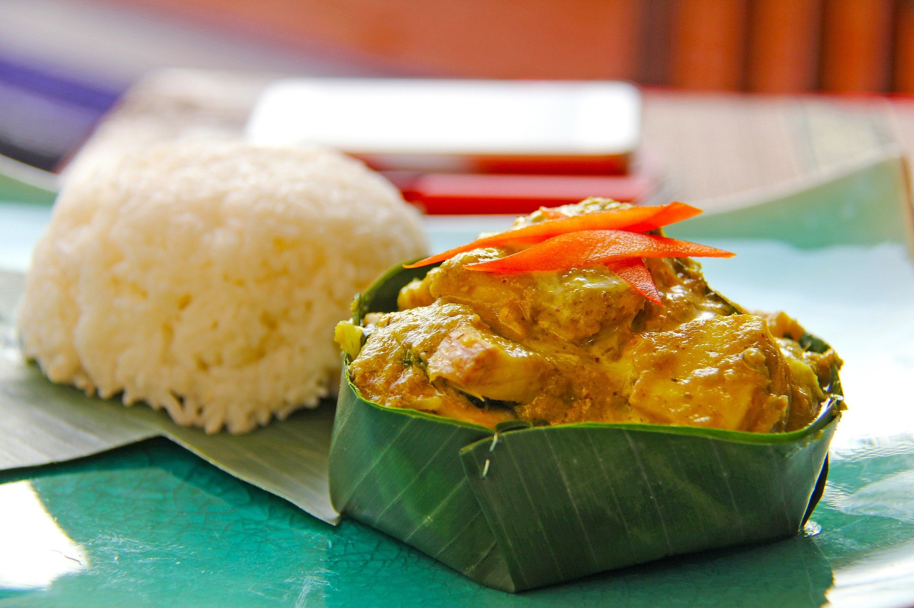

Fish Amok
Home

Description
Fish Amok is a popular dish in South East Asia, specifically Cambodia, but the ingredients can be found in a
popular thai dish as well, the name of which I can't remember just now... anyway! It's so so nice!
This delicious and aromatic dish has fish, curry, and coconut flavours all in one. The presentation of the dish
can be absolutely mesmerising when served in a banana leaf (although probably tricky to do if you've never done
it before). If you want my honest opinion, don't make it - go out and get it at a restaurant! Good luck!
Ingredients
For the kroeung curry paste
- 8cm/3¼in piece galangal, peeled and roughly chopped
- 6 garlic cloves, peeled and roughly chopped
- 12 kaffir lime leaves, roughly chopped
- 2 limes, juice and zest only
- 7 shallots, roughly chopped
- 2 fresh bird’s-eye chillies, stalks removed and roughly chopped
- 2 tsp turmeric
- 2 tbsp palm sugar
- 1 tbsp prahok or Asian fish paste
- 1 tbsp vegetable oil
For the amok
- 150ml/5fl oz coconut milk
- 2 free-range eggs, beaten
- 300g/10½oz cod or other white fish, cut into 3cm/1¼in cubes
- small bunch fresh coriander, roughly chopped
- 2 large palm or banana leaves (optional)
For the morning glory ("pahk bohng" in thai!)
- 1 tbsp vegetable oil
- 3 garlic cloves, finely chopped
- 2 large bunches (about 250g/9oz) morning glory or water spinach, cut into 4-cm/1½-in pieces
- splash of light soy sauce
To serve
- 2 lime or Noni leaves, finely sliced, to garnish
- 1 fresh bird’s-eye chilli, stalk removed and finely sliced, to garnish
- 1 tbsp coconut flakes, toasted, to garnish
- jasmine rice, to serve
- 2 fresh red chillies, finely chopped, to serve
Cooking Instructions
- For the kroeung curry paste, put all the ingredients in a large pestle and mortar and pound until a smooth
paste is formed. Heat the oil in a wok and fry the paste, stirring almost constantly for 10 minutes, or
until darkened in colour. Tip out into a bowl and leave to cool a little.
- For the amok, stir the coconut milk into the curry paste. Beat the eggs into the curry paste mixture. Stir
in the fish and gently fold in the coriander.
- If using the banana or palm leaves to create traditional ‘dishes’, do this now following the information in
the tips section. Alternatively, spoon the amok into a heatproof dish and place in a steamer for about 10
minutes, or until the fish is cooked through and the amok has set.
- For the morning glory, heat the oil in a large wok, add the garlic and fry for 30 seconds. Add the morning
glory and stir-fry for about 3 minutes, adding a splash of water if needed to help cook through and stop
burning. Take off the heat and stir through the soy sauce.
- To serve, garnish the amok with the lime leaves, bird's-eye chilli and coconut. Serve the amok dishes (or
divide into four if you cooked it in one bowl) with the morning glory, rice and red chillies.
Recipe tips
If using banana or palm leaves to create ‘dishes’, do this by dividing each leaf in half and cutting out a circle
from each half using a pan lid as a guide. Bring a wide saucepan of water to the boil and add the leaves for 1
minute, or until softened. Remove and leave to cool. Create a dish shape from the banana leaf by pinning up the
sides of the circle using four toothpicks. Alternatively, use baking paper or heavy duty kitchen foil to create
dishes.
If you don’t like too much heat, remove the seeds and white membranes from the chillies.